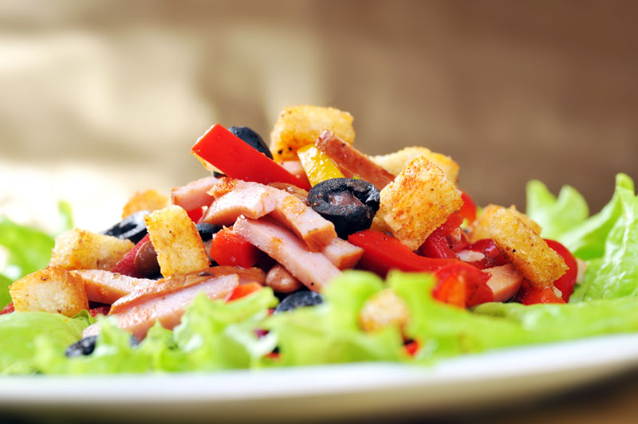

{% extends 'base.html' %}
{% block content %}
About Us
Dining room overlooking the courtyard terrace
Seasons Restaurant, newly refurbed is a stylish and elegant dining room,
flooded with natural daylight overlooking the courtyard terrace.
A bright,
sunny setting for breakfast in Dublin, as well as Sunday Lunch, Seasons Restaurant celebrates
contemporary Irish cuisine lovingly prepared by Executive Chef Vishal Dara and his expert Five Star team,
using only the finest seasonal ingredients.
At Seasons Restaurant there is attention to every detail of our guest's experience,
from the intricate food through to the impressive wine list and the professional, friendly service.
Innovative and sophisticated cuisine - often described as 'artwork on a plate' and a changing
menu which reflects the seasons.
Seasons Restaurant may be booked for private events, offering two private dining rooms which are
ideal for corporate gatherings or family celebrations. Tailored menus, exquisite dining and dedicated,
5 star service - perfect for any special occasion.



{% endblock %}